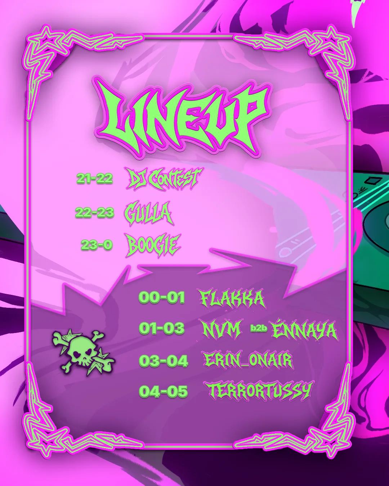
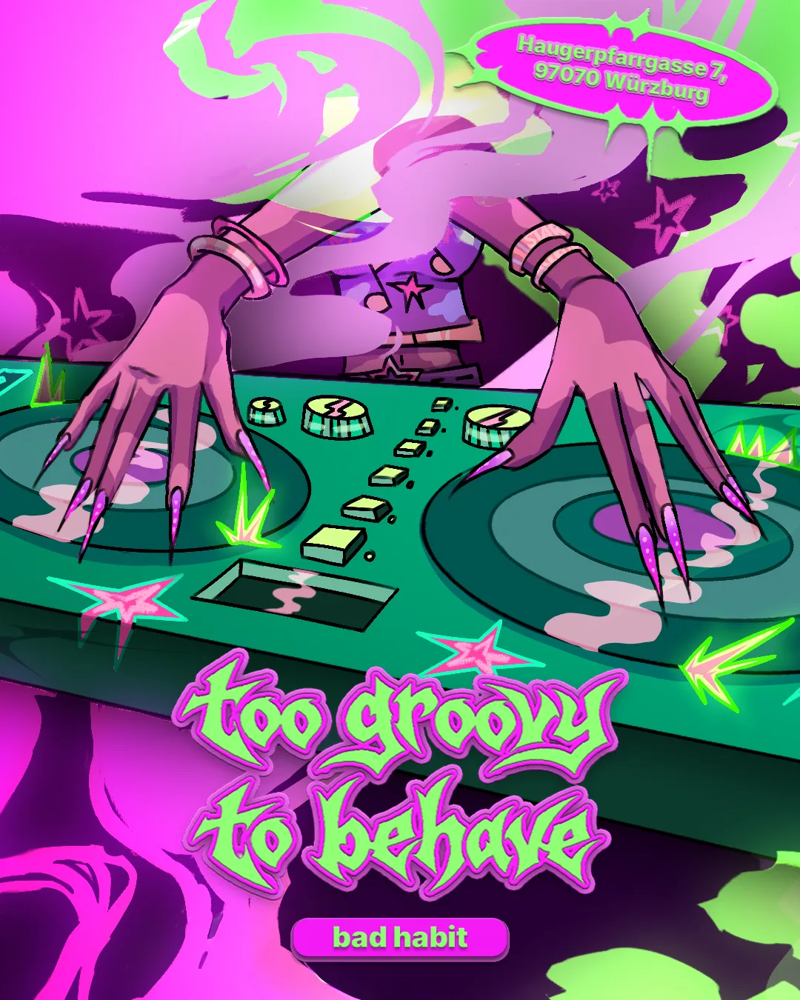
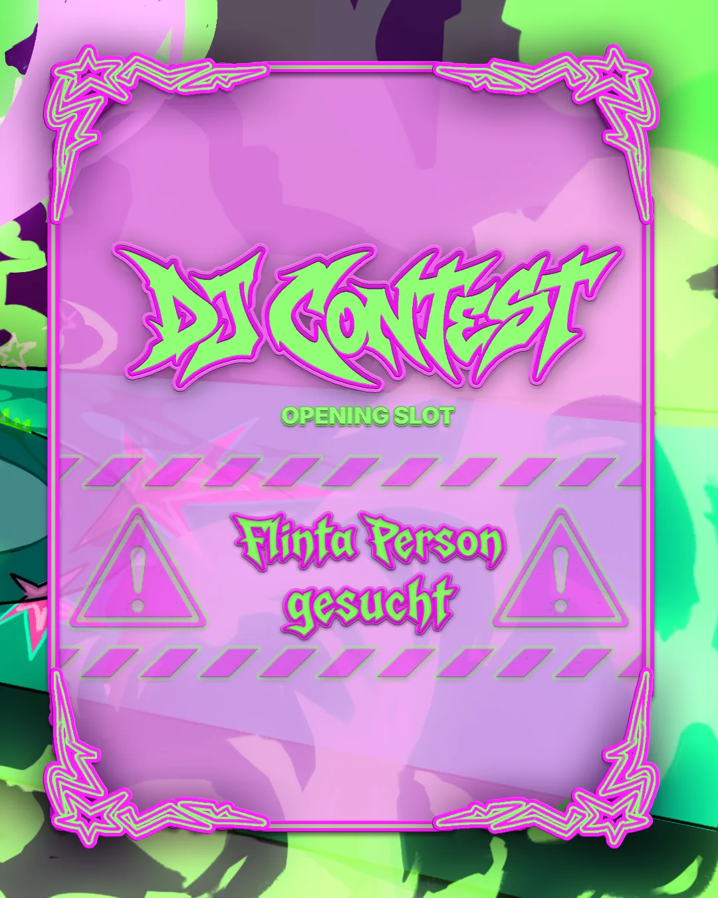

Starkollektiv — Too Groovy To Behave
Dreiteiliges Instagram-Feed-Raster für die Veranstaltung „Too Groovy To Behave“ des Starkollektivs — die drei Posts ergeben im Profil ein zusammenhängendes Bild.



Ähnliches Projekt geplant? Anfrage schreiben oder Leistungen ansehen.